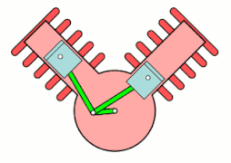
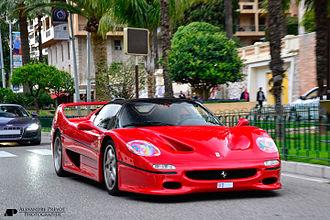
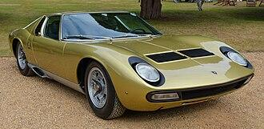
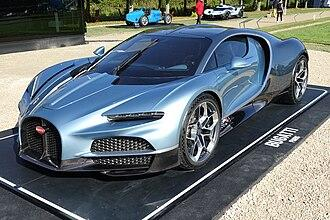
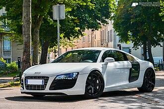
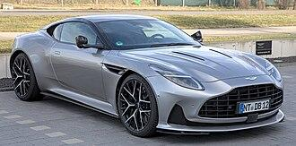

Cette architecture permet de réduire la longueur du vilebrequin et du moteur,
par rapport à un moteur avec cylindres en ligne, et d'obtenir un fonctionnement
généralement plus souple dès les bas régimes.
Les bielles d'une paire de
cylindres sont généralement placées sur le même maneton du vilebrequin,
rarement sur deux manetons décalés. Lorsqu'elles partagent le même maneton,
elles peuvent être placées côte à côte ou entrecroisées, comme sur les curieux V-twin
équipant les motos du constructeur américain Harley-Davidson.

-plus compact, il est presque deux fois plus court qu'un moteur en ligne ayant le même nombre de cylindres. Sa structure est également bien plus rigide en torsion et permet de faire partie intégrante du châssis, sur certaines voitures de compétition (comme les F1, pour ne citer qu'elles). Les moteurs en ligne ne permettent pas ce genre de pratique
-vilebrequin et arbre(s) à cames plus courts donc plus légers, plus rigides et surtout moins chers à produire
-moins de vibrations et régularité cyclique parfaite pour un V6 à 120°, ou un V12 à 60°
-abaisse généralement le centre de gravité[N 3], surtout sur les moteurs avec un V très ouvert tels que les moteurs à plat. Ceci est un gage de stabilité sur les voitures sportives surtout avec l'utilisation de carter sec.
-équilibre vibratoire difficile, pour un V6 à 45° ou 90°
-moteur plus large qu'un moteur à cylindres en ligne
-nécessité d'un circuit de refroidissement plus soigné, voire de deux pompes à eau.
| Ferrari F50 | Lamborghini Miura SV | Bugatti Tourbillon | Audi R8 | Aston Martin DB12 |
|---|---|---|---|---|
| 1995 - 1997 | 1966 - 1973 | 2026 - ? | 2007 - 2015 | 2023 - ? |
 |
 |
 |
 |
 |